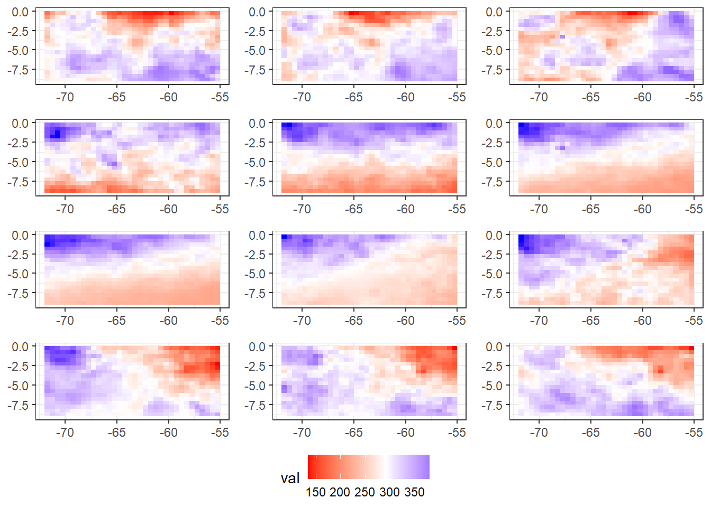
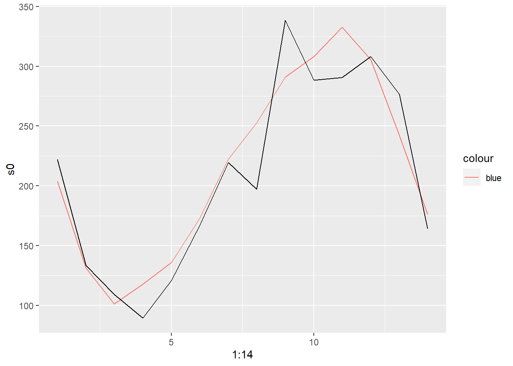
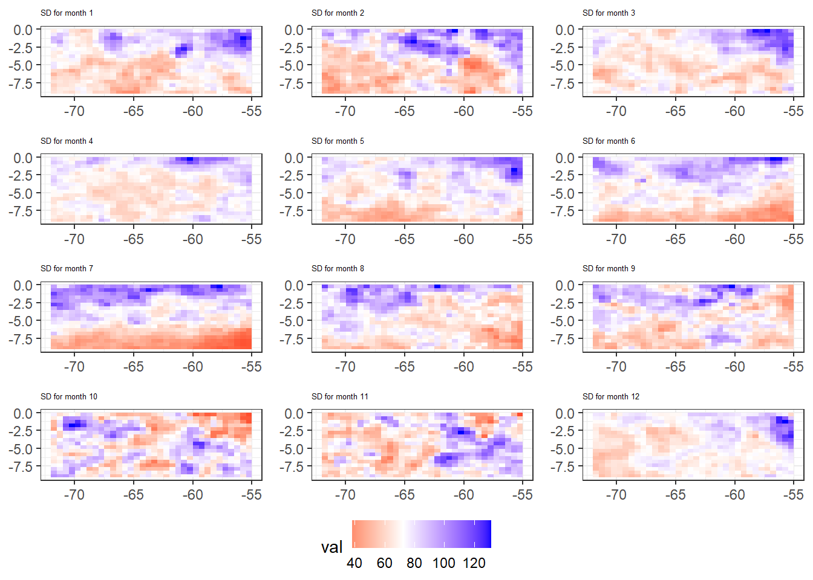
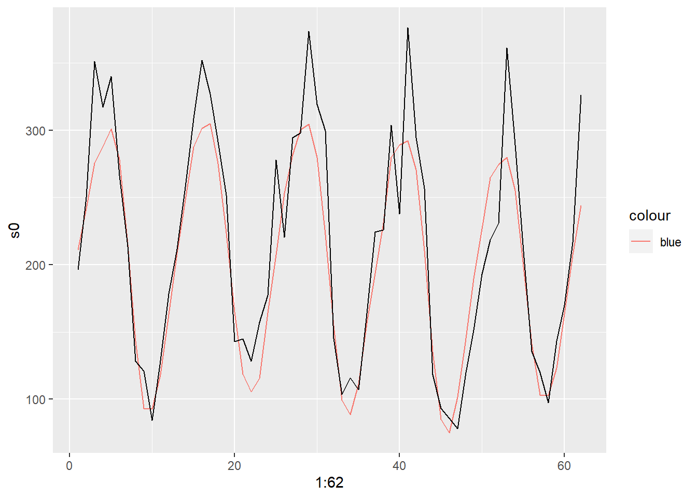

11 Lasso on original data
11.1 LASSO model
We fit a LASSO model on the precipitation and SST data. The precipitation target is the monthly mean precipitation in the Central Amazon Basin, the SST data are monthly temperatures over the globe. We use a 5-fold CV approach to find an optimal lambda. Each fold consists of 5 consecutive years of training data followed by 2 years of test data. In each fold we fit a LASSO model on a set of predetermined lambda values and choose the lambda that minimizes the MSE on the test set in that fold. After determining the best lambda in each fold we choose the lambda that minimizes the MSE over all folds and refit the model to the complete training data. Afterwards we evaluate the fitted model on a separate validation set with 5 years length which was not included in the training phase.
11.2 Error plots
The plot shows the results from the 5 fold-CV plotted for each lambda. Lambda values start with high regularization and then decrease. Initially reducing regularization reduces the error until the 43th lambda value. As the errors get very large after the 60th lambda value and strictly increase we only showed the first 60 values for better visibility The highest regularization is chosen so that all coefficients are zero.

In the above plot we can see the error curves for each fold. Folds 1,2 and 3 in the top row, left to right and folds 4 and 5 in the bottom row. We can see that initially that with decreasing regularization the MSE decreases as well. Up to a certain point after which the error rises again. Fold 4 seems to be the exception where a decrease in regularization does not increase the error dramatically as seen for example in folds 2 and 5 respectively.
Below we can see the minimum MSE for each fold.
## [1] 590.0167 1883.5540 775.5926 598.5691 350.5754And which lambda in the lambda vector resulted in the lowest prediction error on the folds´ test set.
## [1] 33 45 59 47 3811.3 Coefficient plots

The plots displays the nonzero coefficients in each fold computed for the lambda that minimizes the MSE on the test set in the respective fold. For all folds we see large negative coefficients in the arctic. The LASSO chooses among correlated variables only one and discards the others, which can be seen here since the variables chosen are scattered across the map and can but don’t have to be close to each other.
11.4 Inspect predictions from each fold
Following we inspect the folds precipitation time series and the predictions made by the model.

  

In general the model fits the data sufficiently to predict the general form of the time series but misses some modes and is off in the larger values in fold 2.
11.5 Inspect predictions from best CV-lambda
We choose now the best lambda with the 1SE rule and fit the model anew to predict the time series we held out as validation data

Over the more than 5 years of validation data the model predicts the seasonal pattern of the precipitation time series quite well, but constantly fails to predict the higher values of precipitation. The MSE is 1215.74 and the RSME 34.87.
11.6 Summary
We fitted a LASSO model for predicting the mean precipitation in the Central Amazon Basin and used a 5-fold blocked Cross Validation approach to find the optimal level of regularization. After training the model we evaluated its performance on a separate validation set that was not used in the training process. The model shows predicting capabilities but misses out on higher values of the precipitation target. Also although predicting seems to bring useful results, the choice of the LASSO coefficients seems somewhat arbitrary or at least not interpret able in a straightforward way.